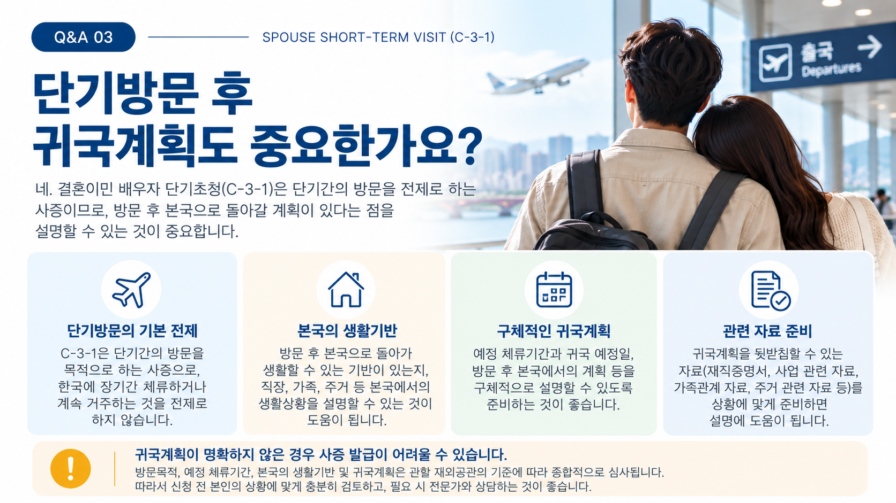
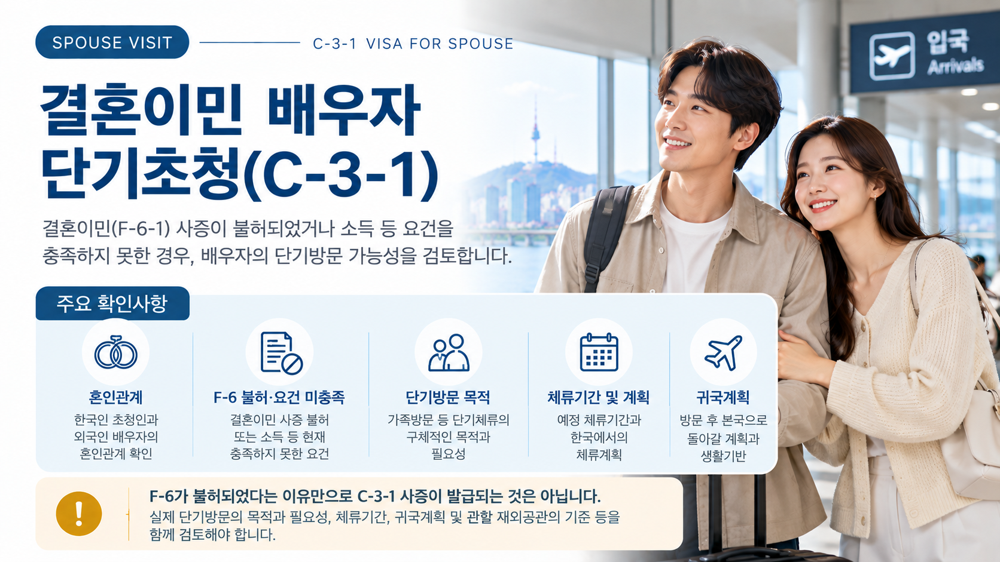
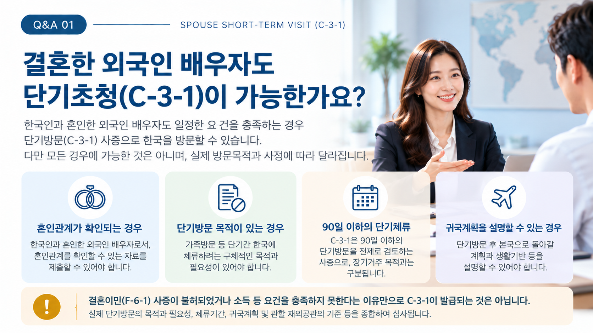
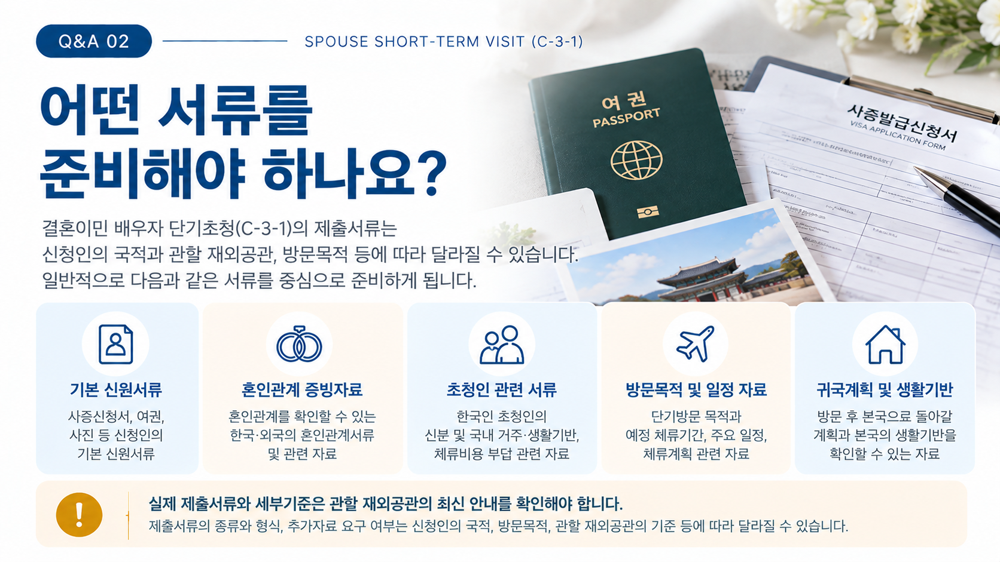

01. 결혼이민 배우자 단기초청(C-3-1)이란?
한국인과 혼인한 외국인 배우자가 가족방문 등 일정한 단기방문 목적으로 대한민국에 입국하려는 경우 C-3-1 사증을 검토할 수 있습니다.
결혼이민(F-6-1)과 달리 장기적인 국내 거주를 목적으로 하는 체류자격은 아니므로, 실제 방문목적과 예정 체류기간을 명확히 확인하는 것이 중요합니다.
02. F-6가 어려우면 C-3-1을 신청할 수 있나요?
결혼이민(F-6-1) 사증이 불허되었거나 현재 소득 등 일부 요건을 충족하지 못하여 F-6 신청이 어려운 상황이 있을 수 있습니다.
이러한 경우에도 외국인 배우자에게 실제 단기방문의 목적과 필요성이 있다면 C-3-1 신청 가능성을 검토할 수 있습니다.
꼭 확인해야 합니다.
F-6 사증이 불허되었거나 요건을 충족하지 못했다는 사실 자체가 C-3-1 사증의 발급사유가 되는 것은 아닙니다. F-6와 별도로 이번 방문이 실제 단기방문에 해당하는지를 확인해야 합니다.

03. 주요 검토사항은 무엇인가요?
| 검토항목 | 주요 내용 |
|---|---|
| 혼인관계 | 한국인 초청인과 외국인 배우자의 혼인관계 |
| F-6 관련 사정 | 불허 이력 또는 현재 충족하지 못한 요건 |
| 방문목적 | 이번 단기방문의 구체적인 목적과 필요성 |
| 체류계획 | 예정 체류기간과 국내에서의 주요 계획 |
| 귀국계획 | 방문 종료 후 출국계획과 본국의 생활기반 |
04. 어떤 서류를 준비하나요?
구체적인 제출서류는 신청인의 국적, 방문목적 및 관할 재외공관의 기준에 따라 달라질 수 있습니다.
일반적으로 다음 사항을 확인할 수 있는 자료를 중심으로 준비하게 됩니다.
- 여권·사증발급신청서 등 기본 신청서류
- 한국인과 외국인 배우자의 혼인관계를 확인할 수 있는 자료
- 한국인 초청인의 신원과 국내 생활기반 관련 자료
- 배우자를 초청하는 목적과 필요성을 확인할 수 있는 자료
- 예정 체류기간과 국내 체류계획 관련 자료
- 귀국계획과 본국 생활기반을 확인할 수 있는 자료
※ 실제 제출서류와 서식은 신청 당시 관할 재외공관의 최신 안내를 확인해야 합니다.

05. 단기방문 목적이 중요합니다.
C-3-1은 단기방문을 전제로 검토하는 사증이므로 단순히 배우자와 함께 한국에서 생활하기 위한 장기거주 목적과는 구분해야 합니다.
따라서 신청 전에는 이번 방문이 왜 필요한지, 어느 기간 동안 한국에 체류할 예정인지, 체류기간 동안 어떤 계획이 있는지를 확인해야 합니다.
방문목적과 체류계획은 서로 자연스럽게 연결되어야 합니다.
06. 귀국계획도 함께 확인합니다.
단기방문은 일정 기간 한국에 체류한 뒤 출국하는 것을 전제로 합니다.
따라서 방문을 마친 후 본국으로 돌아갈 계획과 신청인의 직장·가족·주거 등 본국의 생활기반을 함께 확인하는 것이 중요합니다.
과거 대한민국 출입국·체류이력이 있는 경우에는 해당 이력도 사전에 함께 확인하는 것이 좋습니다.

07. 신청 준비는 어떻게 진행되나요?
신청인의 국적과 거주지역에 따라 관할 재외공관과 제출서류가 달라질 수 있으므로 신청 전 최신 안내를 확인하는 것이 중요합니다.
08. 신청 전에 특히 주의할 점
- F-6가 불허되었다는 이유만으로 C-3-1이 발급되는 것은 아닙니다.
- 소득 등 F-6 요건 미충족 자체가 C-3-1의 발급요건이 되는 것은 아닙니다.
- 실제 방문목적이 단기방문인지 먼저 확인해야 합니다.
- 예정 체류기간과 체류계획 및 귀국계획을 함께 검토하는 것이 중요합니다.
- 과거 불법체류나 출입국·체류상 문제가 있었다면 해당 사실관계를 사전에 확인해야 합니다.
- 신청인의 국적과 관할 재외공관에 따라 요구되는 서류와 심사기준이 달라질 수 있습니다.
외국인 배우자의 단기방문을 준비하고 계신가요?
F-6 불허 또는 현재 충족하지 못한 요건과 이번 방문의 목적·체류계획을 확인하여 준비해야 할 사항을 검토해 보세요.